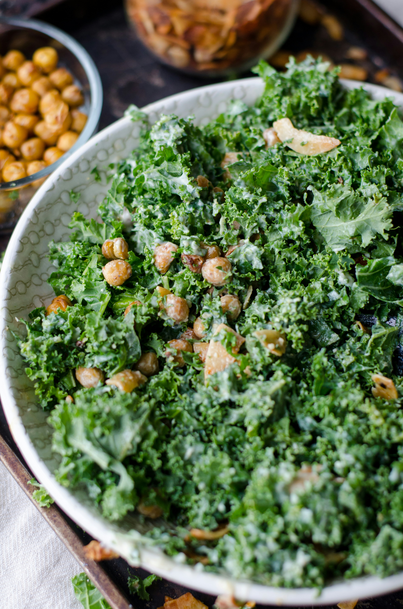

Fresh connection, one salad at a time
新鮮なつながりを、ひとつのサラダから
Concept
Fresh
健康と交流を促進する、サラダをテーマにした交流の形
「_____________________」のコンセプトは健康的な植生活を促進しながら、ビジネスや社会人交流の場を提供することです
サラダは、美味しい！凄い！素晴らしい！美味しい！凄い！素晴らしい！美味しい！凄い！素晴らしい！美味しい！凄い！素晴らしい！美味しい！凄い！素晴らしい！美味しい！凄い！素晴らしい！美味しい！凄い！素晴らしい！美味しい！凄い！素晴らしい！美味しい！凄い！素晴らしい！
また、サラダの材料を組み合わせるように様々な業種や分野の人々が交流し、新しいアイデアやビジネスチャンスを生み出す場でもあります

サラダは、美味しい！凄い！素晴らしい！美味しい！凄い！素晴らしい！美味しい！凄い！素晴らしい！美味しい！凄い！素晴らしい！美味しい！凄い！素晴らしい！美味しい！凄い！素晴らしい！美味しい！凄い！素晴らしい！美味しい！凄い！素晴らしい！美味しい！凄い！素晴らしい！
また、サラダの材料を組み合わせるように様々な業種や分野の人々が交流し、新しいアイデアやビジネスチャンスを生み出す場でもあります
Service
サラダを提供するビジネスランチイベント
サラダを提供するビジネスランチイベントです。 美味しい！凄い！ヘルシーBusiness

サラダを提供するビジネスランチイベント
サラダを提供するビジネスランチイベントです。 美味しい！凄い！ヘルシーEnjoy

サラダを提供するビジネスランチイベント
サラダを提供するビジネスランチイベントです。 美味しい！凄い！ヘルシーEvent
Company
- 会社名
- 株式会社AAA salad meeting
- 所在地
- 東京都文才区桜町2丁目
- 設立
- 9999年12月31日
- 代表者名
- 皿打好男